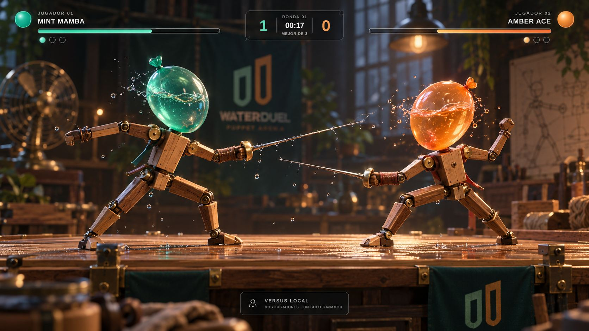
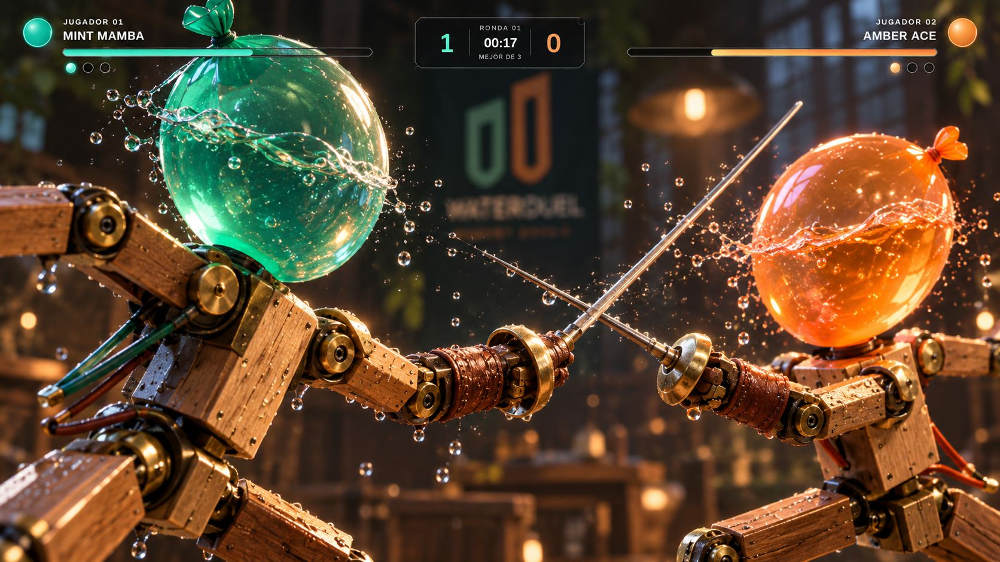
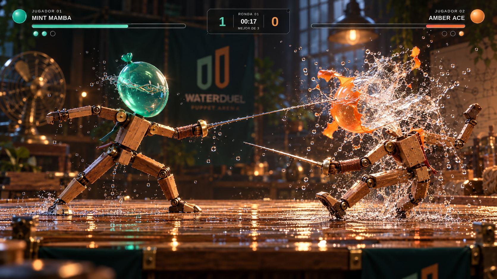
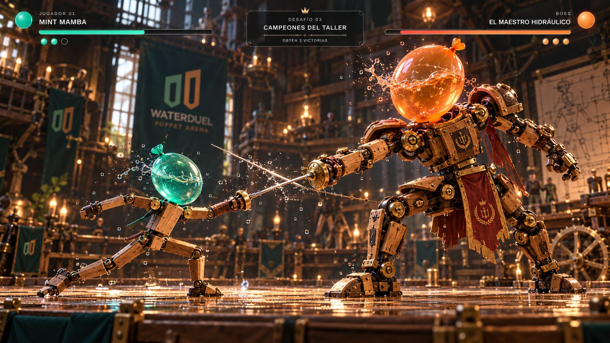

Cuatro objetivos visuales coherentes para animación, materiales y físicas de juego.
Importante: estas cuatro imágenes son referencias artísticas generadas, no capturas reales del motor WebGL2. El ZIP contiene una implementación 3D interactiva propia cuyos gráficos pueden diferir de esta meta visual.

01 · Versus: dos muñecos, madera barnizada, instrumentos de esgrima y cabezas llenas de agua.

02 · Primer plano: herrajes, anillos de pivote, cuero, latón y profundidad material.

03 · Rotura: latex que se desgarra, agua con inercia y salpicaduras volumétricas.

04 · Single player: rival jefe con proporciones superiores y armadura ornamentada.